수치형 변수 기술통계
숫자 데이터의 ‘중심’, ‘퍼짐’, ‘모양’ 읽기
- 평균·중위수, 표준편차·IQR, 왜도·첨도의 의미를 설명할 수 있다.
- 히스토그램·밀도그래프·상자그림·Q-Q 그림을 그리고 읽을 수 있다.
- 한쪽으로 치우친 데이터를 로그 변환 등으로 다듬을 수 있다.
- 두 수치형 변수의 상관계수와 산점도·추세선을 해석할 수 있다.
import pandas as pd
import numpy as np
import matplotlib.pyplot as plt
import seaborn as sns
import platform
sns.set_theme(style='whitegrid') # 그래프 기본 스타일 (이 줄을 먼저!)
# 그래프에서 한글이 깨지지 않게 하는 설정 (운영체제에 맞는 글꼴 선택)
plt.rcParams['font.family'] = {'Darwin': 'Apple SD Gothic Neo', 'Windows': 'Malgun Gothic'}.get(platform.system(), 'NanumGothic')
plt.rcParams['axes.unicode_minus'] = False # 마이너스(-) 기호 깨짐 방지
tips = pd.read_csv("data/tips.csv")
diamonds = pd.read_csv("data/diamonds.csv")
titanic = pd.read_csv("data/titanic.csv")
bill = tips["total_bill"] # 앞으로 자주 쓸 ‘총 계산 금액’ 열에 짧은 이름 붙이기
bill.head()
| total_bill | |
|---|---|
| 0 | 16.99 |
| 1 | 10.34 |
| 2 | 21.01 |
| 3 | 23.68 |
| 4 | 24.59 |
4.1 한 수치형 변수의 분포 분석
수치형 변수 하나를 설명하는 방법은 세 가지 질문으로 정리됩니다.
| 질문 | 알려 주는 통계량 | 비유 |
|---|---|---|
| ① 중심은 어디인가? | 평균, 중위수 | “우리 반 키는 보통 어느 정도?” |
| ② 얼마나 퍼져 있나? | 분산, 표준편차, 범위, IQR | “키가 다들 비슷한가, 들쭉날쭉한가?” |
| ③ 모양은 어떤가? | 왜도, 첨도 | “한쪽으로 쏠려 있나? 뾰족한가?” |
4.1.1 숫자로 요약하기
① 중심 경향: 평균과 중위수
5명이 월급을 말합니다: 300, 320, 340, 360, 5,000(만원). 평균은 모두의 월급을 똑같이 나누면 얼마인지(1,264만원)를 뜻하지만, 사장님 한 명 때문에 ‘우리 대부분의 현실’과 동떨어졌죠. 반면 중위수는 일렬로 줄 세웠을 때 정확히 가운데 사람의 값(340만원)이라, 극단적인 값에 흔들리지 않습니다. 평균은 시소의 무게중심, 중위수는 줄 세우기의 한가운데입니다.
print("평균 :", bill.mean())
print("중위수 :", bill.median())
평균 : 19.78594262295082 중위수 : 17.795
평균이 중위수보다 큰 것은 비싼 계산서 몇 건이 평균을 끌어올렸다는 신호입니다. (분포가 오른쪽으로 길게 늘어진 모양)
salary = pd.Series([300, 320, 340, 360, 5000])
print("평균:", salary.mean(), "/ 중위수:", salary.median()) # 위 비유 확인
평균: 1264.0 / 중위수: 340.0
② 퍼진 정도: 분산·표준편차·변동계수
두 양궁 선수가 모두 평균 9점을 쐈다고 해도, A는 늘 8~10점 사이, B는 3점과 10점을 오갈 수 있습니다. ‘평균’만으로는 안정감을 알 수 없죠. 이 들쭉날쭉한 정도를 숫자로 만든 것이 표준편차입니다. “평균에서 보통 이 정도 떨어져 있다”로 읽으면 됩니다. 분산은 표준편차를 제곱한 값입니다. (단위가 제곱이라 해석은 표준편차가 쉽습니다.)
print("분산 :", bill.var())
print("표준편차 :", bill.std())
print("변동계수 :", bill.std() / bill.mean()) # 표준편차 ÷ 평균
분산 : 79.25293861397827 표준편차 : 8.902411954856856 변동계수 : 0.44993620594706724
변동계수는 ‘평균 대비 퍼짐의 비율’이라 단위가 달라도 비교할 수 있습니다. 예: 몸무게(kg)와 키(cm) 중 어느 쪽이 더 들쭉날쭉한지는 표준편차끼리 비교할 수 없지만, 변동계수로는 비교됩니다.
③ 위치로 말하기: 분위수와 IQR
전교생을 키 순서대로 한 줄로 세웁니다. 앞에서 25% 지점 사람의 키가 1사분위수(Q1), 정중앙(50%)이 중위수, 75% 지점이 3사분위수(Q3)입니다. IQR = Q3 − Q1은 ‘가운데 절반의 학생들이 퍼져 있는 폭’입니다. 양쪽 끝의 극단값은 무시하기 때문에 이상치에 강합니다.
print(bill.quantile([0, 0.25, 0.5, 0.75, 1]))
print()
q1, q3 = bill.quantile(0.25), bill.quantile(0.75)
print("IQR :", q3 - q1)
print("범위(최댓값-최솟값):", bill.max() - bill.min())
0.00 3.0700 0.25 13.3475 0.50 17.7950 0.75 24.1275 1.00 50.8100 Name: total_bill, dtype: float64 IQR : 10.779999999999998 범위(최댓값-최솟값): 47.74
그 밖에 이상치에 강한 퍼짐 지표로 중앙값 절대편차(MAD)가 있습니다. “각 값이 중위수에서 떨어진 거리의 중위수”입니다.
from scipy import stats
print("MAD:", stats.median_abs_deviation(bill, scale="normal")) # R의 mad()와 같은 방식
MAD: 7.457489159083178
④ 분포의 모양: 왜도와 첨도
왜도는 산이 한쪽으로 기울어진 정도입니다. 소득 분포처럼 대부분은 오른쪽(낮은 값)에 몰려 있고 소수의 부자가 오른쪽 꼬리를 길게 늘어뜨리면 왜도가 양수(+)입니다. 첨도는 산 꼭대기가 뾰족한 정도(꼬리가 두꺼운 정도)입니다. 정규분포(종 모양)를 기준(0)으로 삼아 더 뾰족하면 +, 납작하면 −입니다.
print("왜도:", bill.skew())
print("첨도:", bill.kurt()) # pandas의 kurt()는 정규분포를 0으로 맞춘 값
왜도: 1.1332130376158205 첨도: 1.2184840156638854
| 값 | 해석 |
|---|---|
| 왜도 ≈ 0 | 좌우 대칭 |
| 왜도 > 0 | 오른쪽 꼬리가 김 (비싼 값 몇 개가 끌어올림) |
| 왜도 < 0 | 왼쪽 꼬리가 김 |
| 첨도 > 0 | 정규분포보다 뾰족하고 꼬리가 두꺼움 (극단값이 더 자주 나옴) |
| 첨도 < 0 | 정규분포보다 납작함 |
⑤ 한 번에 보기: describe()
tips[["total_bill", "tip", "size"]].describe().round(2)
| total_bill | tip | size | |
|---|---|---|---|
| count | 244.00 | 244.00 | 244.00 |
| mean | 19.79 | 3.00 | 2.57 |
| std | 8.90 | 1.38 | 0.95 |
| min | 3.07 | 1.00 | 1.00 |
| 25% | 13.35 | 2.00 | 2.00 |
| 50% | 17.80 | 2.90 | 2.00 |
| 75% | 24.13 | 3.56 | 3.00 |
| max | 50.81 | 10.00 | 6.00 |
R의 psych::describe()가 하는 일을, 파이썬에서는 describe()(기본 통계) + skew()·kurt()(모양)로 나누어 합니다. 아래처럼 한 표로 합칠 수도 있습니다.
num = tips[["total_bill", "tip", "size"]]
summary = num.describe().T # .T : 행과 열 뒤집기(전치)
summary["왜도"] = num.skew()
summary["첨도"] = num.kurt()
summary.round(2)
| count | mean | std | min | 25% | 50% | 75% | max | 왜도 | 첨도 | |
|---|---|---|---|---|---|---|---|---|---|---|
| total_bill | 244.0 | 19.79 | 8.90 | 3.07 | 13.35 | 17.8 | 24.13 | 50.81 | 1.13 | 1.22 |
| tip | 244.0 | 3.00 | 1.38 | 1.00 | 2.00 | 2.9 | 3.56 | 10.00 | 1.47 | 3.65 |
| size | 244.0 | 2.57 | 0.95 | 1.00 | 2.00 | 2.0 | 3.00 | 6.00 | 1.45 | 1.73 |
⑥ 도수분포표: 구간으로 나누어 세기
점수를 하나하나 세는 대신 “90점대 몇 명, 80점대 몇 명”으로 구간(칸)에 나누어 세는 방법입니다. 성적 분포표를 만들 듯이요. 구간으로 나누는 도구가 pd.cut()입니다.
bins = [0, 10, 20, 30, 40, 50, 60]
grade = pd.cut(bill, bins=bins, include_lowest=True) # 계산 금액을 10달러 단위 구간으로 나누기
grade.value_counts().sort_index()
| count | |
|---|---|
| total_bill | |
| (-0.001, 10.0] | 17 |
| (10.0, 20.0] | 130 |
| (20.0, 30.0] | 65 |
| (30.0, 40.0] | 22 |
| (40.0, 50.0] | 9 |
| (50.0, 60.0] | 1 |
4.1.2 그래프로 요약하기
① 히스토그램
히스토그램은 도수분포표를 그림으로 그린 것입니다. 구간별로 ‘몇 개가 속하는지’를 막대 높이로 쌓습니다. 막대 사이가 붙어 있는 이유는 숫자가 끊기지 않고 이어지는 값이기 때문이에요. (막대그래프는 범주라서 떨어져 있었죠.)
sns.histplot(data=tips, x="total_bill", bins=15) # bins: 구간(막대) 개수
plt.title("계산 금액의 분포")
plt.xlabel("총 계산 금액($)"); plt.ylabel("팀 수")
plt.show()
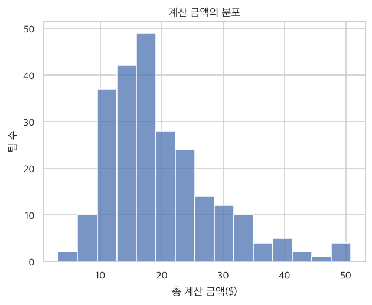
구간(bins) 수에 따라 모양이 달라집니다. 너무 적으면 뭉뚱그려져서 특징이 사라지고, 너무 많으면 들쭉날쭉해서 잡음이 보입니다. 여러 값으로 바꿔 보며 적절한 모양을 찾으세요. 아래는 구간을 5개 / 15개 / 50개로 비교한 모습입니다.
fig, axes = plt.subplots(1, 3, figsize=(13, 3.3))
for ax, b in zip(axes, [5, 15, 50]):
sns.histplot(data=tips, x="total_bill", bins=b, ax=ax)
ax.set_title(f"구간 {b}개")
plt.tight_layout()
plt.show()
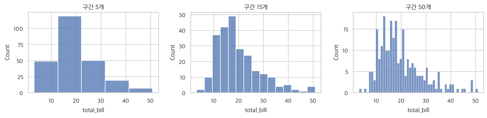
② 확률밀도 그래프
히스토그램의 울퉁불퉁한 계단을 부드러운 언덕 모양의 곡선으로 다듬은 것입니다. 모래를 쌓아 만든 모래 언덕의 윤곽선이라고 생각하세요. 곡선 아래 전체 면적은 1(100%)입니다.
sns.histplot(data=tips, x="total_bill", stat="density", bins=15, alpha=0.4) # 높이를 ‘밀도’ 단위로
sns.kdeplot(data=tips, x="total_bill", color="crimson") # 부드러운 곡선 겹치기
plt.title("계산 금액의 확률밀도")
plt.show()
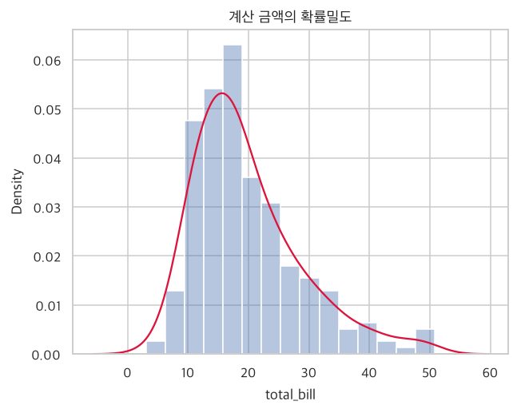
③ 상자 그림 (Box plot)
상자 그림은 데이터를 다섯 숫자 요약으로 그린 ‘얼굴 사진’입니다. 상자 = 가운데 50%의 사람들이 사는 집, 상자 안의 선 = 중위수, 수염 = 일반적인 범위, 수염 밖의 점 = 튀는 값(이상치)입니다.
sns.boxplot(data=tips, y="total_bill")
plt.title("계산 금액 상자 그림")
plt.show()
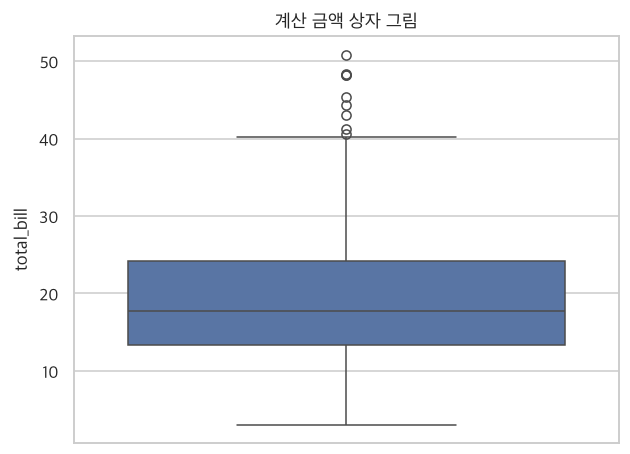
| 그림의 부분 | 뜻 |
|---|---|
| 상자 아래/위 경계 | 1사분위수(Q1) / 3사분위수(Q3) |
| 상자 안 가로선 | 중위수 |
| 수염 끝 | Q1−1.5×IQR ~ Q3+1.5×IQR 범위 안의 최솟값/최댓값 |
| 수염 밖 점 | 이상치(평소와 동떨어진 값) |
이상치로 분류되는 기준(수염의 한계)은 1.5×IQR 규칙입니다. 직접 계산해서 어떤 값들이 이상치로 찍히는지 확인해 봅시다.
upper = q3 + 1.5 * (q3 - q1)
print("이상치 기준(상한):", round(upper, 2))
bill[bill > upper].sort_values()
이상치 기준(상한): 40.3
| total_bill | |
|---|---|
| 184 | 40.55 |
| 142 | 41.19 |
| 197 | 43.11 |
| 102 | 44.30 |
| 182 | 45.35 |
| 156 | 48.17 |
| 59 | 48.27 |
| 212 | 48.33 |
| 170 | 50.81 |
④ Q-Q 그림: 정규분포(종 모양)와 얼마나 닮았나?
Q-Q 그림은 자 대보기입니다. ‘이상적인 종 모양’이 만든 눈금과 우리 데이터의 눈금을 나란히 놓고, 점들이 대각선 위에 곧게 놓이면 정규분포와 닮았다는 뜻이에요. 곡선으로 휘어지면 어딘가 치우쳐 있다는 신호입니다.
import statsmodels.api as sm
sm.qqplot(bill, line="s") # line="s": 비교용 대각선 그리기
plt.title("계산 금액의 Q-Q 그림")
plt.show()
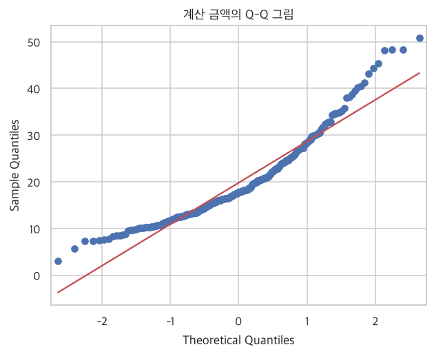
오른쪽 끝에서 점들이 직선 위로 휘어 올라갑니다. 비싼 금액이 정규분포가 기대하는 것보다 많다는 뜻으로, 오른쪽 꼬리가 길다는 앞선 결과(왜도 > 0)와 일치합니다.
4.1.3 수치형 변수 변환
한쪽으로 치우친 데이터는 세로로 너무 긴 사진과 같습니다. 한 화면에 담으려면 사진을 줄여서(압축) 비율을 맞추어야 하죠. 로그 변환은 큰 값은 많이 줄이고 작은 값은 적게 줄여서 분포를 고르게 만듭니다. 지진의 ‘진도’나 소리의 ‘데시벨’도 큰 숫자를 다루기 쉽게 로그로 압축한 값이에요.
다이아몬드 가격(price)은 비싼 다이아몬드가 소수라 오른쪽 꼬리가 아주 깁니다.
price = diamonds["price"]
print("왜도:", round(price.skew(), 2))
sns.histplot(price, bins=40)
plt.title("다이아몬드 가격 (원래 값)")
plt.show()
왜도: 1.62
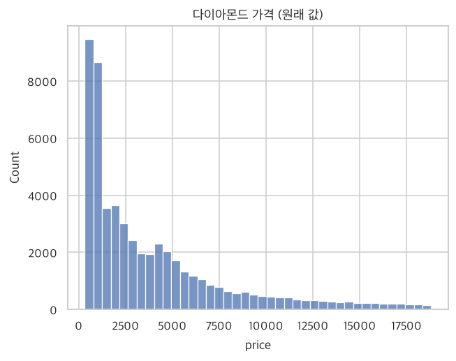
로그를 취하면 어떻게 달라질까요? np.log10()은 ‘10의 몇 제곱인가’를 계산합니다. (예: 1000 → 3)
diamonds["price_log10"] = np.log10(diamonds["price"]) # 새 열로 저장
print("왜도:", round(diamonds["price_log10"].skew(), 2))
sns.histplot(diamonds["price_log10"], bins=40)
plt.title("다이아몬드 가격 (log10 변환 후)")
plt.show()
왜도: 0.12
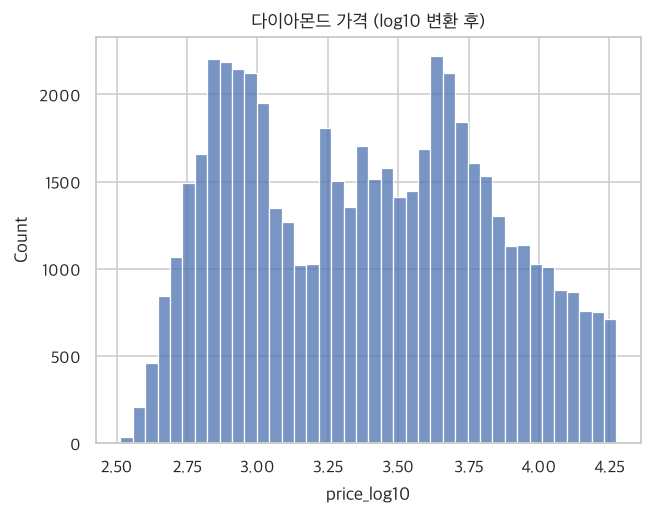
그래프만 로그 눈금으로 보고 싶다면, 데이터는 두고 축만 바꿀 수도 있습니다. 이때 축의 숫자는 원래 가격 그대로 읽을 수 있어 편리합니다.
sns.histplot(data=diamonds, x="price", log_scale=True, bins=40)
plt.title("다이아몬드 가격 (축만 로그 눈금)")
plt.show()
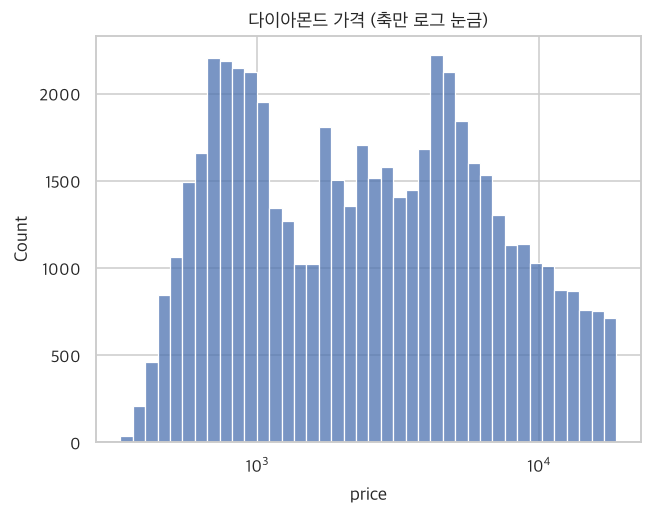
제곱근(√) 변환도 비슷한 효과가 있지만, 꼬리가 아주 길 때는 로그가 더 강력합니다.
diamonds["price_sqrt"] = np.sqrt(diamonds["price"])
print("원래 왜도 :", round(price.skew(), 2))
print("제곱근 후 :", round(diamonds["price_sqrt"].skew(), 2))
print("로그 후 :", round(diamonds["price_log10"].skew(), 2))
원래 왜도 : 1.62 제곱근 후 : 0.84 로그 후 : 0.12
Box-Cox 변환: 가장 알맞은 변환을 자동으로 찾기
로그, 제곱근, 제곱 등은 모두 ‘거듭제곱’의 친구들입니다. Box-Cox 변환은 분포를 정규분포에 가장 가깝게 만드는 거듭제곱 값(λ, 람다)을 컴퓨터가 알아서 찾아 줍니다.
라디오 주파수를 돌려 가장 잡음 없이 깨끗한 채널을 찾는 것과 같습니다. 로그(λ=0), 제곱근(λ=0.5) 같은 여러 채널을 두루 시도해 보고 가장 선명한 채널을 골라 줍니다.
from scipy import stats
price_bc, lam = stats.boxcox(diamonds["price"]) # 변환된 값과 최적 λ를 함께 돌려줌
diamonds["price_bc"] = price_bc
print("최적 λ =", round(lam, 3))
print("Box-Cox 후 왜도:", round(diamonds["price_bc"].skew(), 3))
최적 λ = -0.067 Box-Cox 후 왜도: 0.026
λ가 0에 가까우면 로그 변환과 비슷하다는 뜻입니다. 단, Box-Cox는 0보다 큰 값에만 쓸 수 있습니다. R의 car::powerTransform() + bcPower()가 파이썬의 scipy.stats.boxcox()에 해당합니다.
4.2 둘 이상의 수치형 변수의 상관성 분석
4.2.1 상관계수
상관계수 r은 ‘두 변수가 얼마나 같이 움직이는가’를 −1에서 +1 사이 한 숫자로 나타낸 값입니다. 키와 몸무게는 한쪽이 클수록 다른 쪽도 커지니 r이 +에 가깝고, 기온과 난방비는 한쪽이 높아지면 다른 쪽이 줄어드니 −에 가깝고, 신발 사이즈와 수학 점수는 무관하니 0 근처입니다. 같이 춤추는 정도라고 생각하세요.
| r 값 | 해석 |
|---|---|
| +1에 가까움 | 한쪽이 오르면 다른 쪽도 거의 정확히 같이 오름 (강한 양의 관계) |
| 0 근처 | 서로 관련 없음 |
| −1에 가까움 | 한쪽이 오르면 다른 쪽은 거의 정확히 내림 (강한 음의 관계) |
피어슨 상관계수는 ‘직선’ 관계의 세기를 측정합니다. 계산은 corr()로 합니다.
print("총금액 vs 팁:", round(tips["total_bill"].corr(tips["tip"]), 3))
print()
tips[["total_bill", "tip", "size"]].corr().round(3) # 모든 쌍을 한 번에: 상관행렬
총금액 vs 팁: 0.676
| total_bill | tip | size | |
|---|---|---|---|
| total_bill | 1.000 | 0.676 | 0.598 |
| tip | 0.676 | 1.000 | 0.489 |
| size | 0.598 | 0.489 | 1.000 |
| |r| 크기 (Cohen의 기준) | 해석 |
|---|---|
| 0.5 이상 | 상관성이 크고 강함 |
| 약 0.3 | 중간 정도 |
| 약 0.1 | 작고 약함 |
상관관계 ≠ 인과관계. 아이스크림 판매량과 물놀이 사고는 같이 늘지만, 아이스크림이 사고를 일으키는 것은 아닙니다. ‘더운 날씨’라는 제3의 요인이 둘을 함께 움직이죠.
결측치(빈칸)가 있을 때
타이타닉의 나이(age)에는 빈칸이 있습니다. pandas의 corr()는 빈칸이 있는 쌍을 자동으로 제외하고 계산합니다. (R의 use="pairwise.complete.obs"가 기본값인 셈입니다.)
titanic[["age", "fare", "sibsp", "parch"]].corr().round(3)
| age | fare | sibsp | parch | |
|---|---|---|---|---|
| age | 1.000 | 0.096 | -0.308 | -0.189 |
| fare | 0.096 | 1.000 | 0.160 | 0.216 |
| sibsp | -0.308 | 0.160 | 1.000 | 0.415 |
| parch | -0.189 | 0.216 | 0.415 | 1.000 |
피어슨 외의 다른 상관계수
피어슨은 실제 점수를 그대로 쓰지만, 스피어만은 점수를 등수로 바꿔서 비교합니다. 달리기 시합에서 “기록(초)”이 아닌 “등수”만 본다고 생각하세요. 극단적인 값의 영향을 덜 받아요. 켄달은 두 순위가 ‘얼마나 같은 순서로 정렬되는지’를 짝지어 따집니다.
pair = tips[["total_bill", "tip"]]
pd.DataFrame({
"피어슨": [pair.corr(method="pearson").iloc[0, 1]],
"스피어만": [pair.corr(method="spearman").iloc[0, 1]],
"켄달": [pair.corr(method="kendall").iloc[0, 1]],
}, index=["총금액-팁"]).round(3)
| 피어슨 | 스피어만 | 켄달 | |
|---|---|---|---|
| 총금액-팁 | 0.676 | 0.679 | 0.517 |
상관계수가 ‘진짜’인지 검정하기
표본에서 구한 r이 우연히 나온 값일 가능성은 없을까요? 상관 검정은 “실제 모집단에서는 상관이 0(없음)이다”라고 가정했을 때 이런 r이 나올 확률(p-값)을 알려 줍니다.
from scipy.stats import pearsonr
r, p = pearsonr(tips["total_bill"], tips["tip"])
print(f"상관계수 r = {r:.3f}")
print(f"p-값 = {p:.3g} (0.05보다 작으면 상관이 있다고 판단)")
상관계수 r = 0.676 p-값 = 6.69e-34 (0.05보다 작으면 상관이 있다고 판단)
R의 cor.test(x, y) → scipy.stats.pearsonr(x, y), method="spearman" → spearmanr(), "kendall" → kendalltau().
상관행렬을 그림(히트맵)으로
상관행렬의 숫자들을 색깔 온도계로 바꾼 그림입니다. 빨강은 강한 양의 상관, 파랑은 강한 음의 상관, 흰색은 무관. 숫자표보다 훨씬 빨리 패턴을 찾을 수 있어요.
cols = ["carat", "depth", "table", "price", "x", "y", "z"] # 다이아몬드의 수치형 변수들
corr = diamonds[cols].corr()
sns.heatmap(corr, annot=True, fmt=".2f", cmap="coolwarm", vmin=-1, vmax=1, square=True)
plt.title("다이아몬드 변수들의 상관행렬")
plt.show()
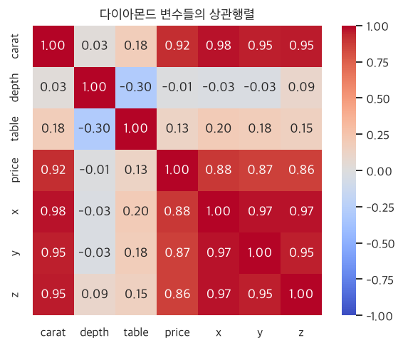
무게(carat)·가격(price)·크기(x, y, z)가 서로 강하게 연결되어 있습니다. 무거운 다이아몬드일수록 크고 비싸니까요.
4.2.2 산점도
산점도는 두 변수로 만든 지도입니다. 가로 좌표는 첫 번째 변수, 세로 좌표는 두 번째 변수 값으로, 관측치 하나마다 점 하나를 찍습니다. 점들이 사선으로 모여 있으면 ‘관계 있음’, 흩뿌려져 있으면 ‘관계 없음’입니다.
sns.scatterplot(data=tips, x="total_bill", y="tip")
plt.title("총 계산 금액과 팁")
plt.xlabel("총 계산 금액($)"); plt.ylabel("팁($)")
plt.show()
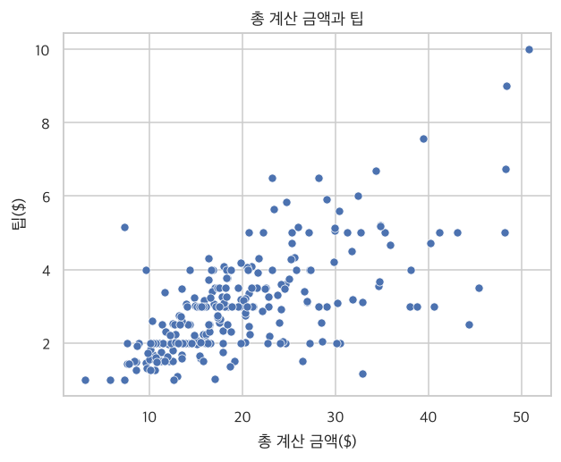
4.2.3 추세선
점들의 전반적인 흐름을 선으로 그려 주면 관계가 더 선명해집니다. 직선 추세선(선형 회귀선)은 점들의 한가운데를 지나는 ‘가장 잘 맞는 직선’입니다.
직선 추세선은 점들 사이에 투명한 자를 올려 놓고 점들과 평균적으로 가장 가깝게 지나도록 맞춘 선이고, 부드러운 곡선(loess)은 고무줄을 점들 사이에 걸쳐 놓은 것처럼 자연스럽게 휘는 선입니다.
sns.regplot(data=tips, x="total_bill", y="tip", scatter_kws={"alpha": 0.6}, line_kws={"color": "crimson"})
plt.title("직선 추세선")
plt.show()
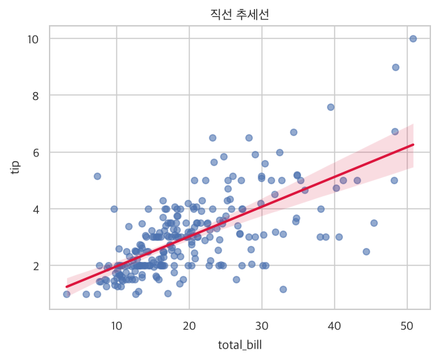
곡선 추세선은 lowess=True를 지정합니다. 직선과 곡선이 비슷하면 관계가 ‘직선’이라고 봐도 무방합니다.
sns.regplot(data=tips, x="total_bill", y="tip", lowess=True, scatter_kws={"alpha": 0.6}, line_kws={"color": "crimson"})
plt.title("부드러운 곡선 추세선(lowess)")
plt.show()
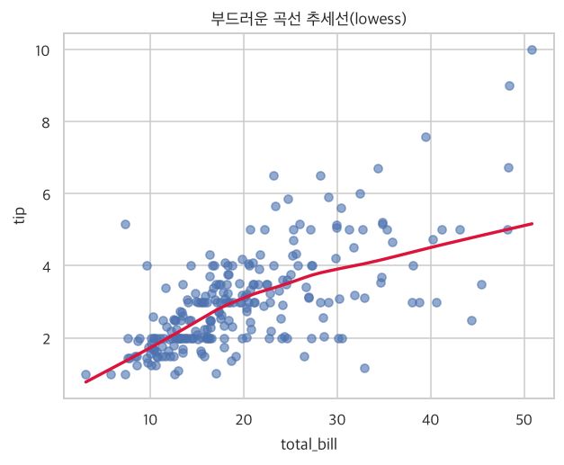
4.2.4 한꺼번에 보기: pairplot 응용
2장에서 본 pairplot은 산점도와 분포를 한 번에 보여 줍니다. 상관계수까지 함께 보고 싶다면 아래처럼 사용자가 직접 칸마다 그릴 내용을 정해 줍니다. (R의 GGally::ggpairs()와 같은 그림을 만드는 방법입니다.)
def show_corr(x, y, **kw): # 칸 안에 상관계수를 글자로 적어 주는 도우미 함수
r = x.corr(y)
ax = plt.gca()
ax.annotate(f"r = {r:.2f}", (0.5, 0.5), xycoords="axes fraction", ha="center", va="center", fontsize=14)
ax.set_axis_off()
g = sns.PairGrid(tips[["total_bill", "tip", "size"]])
g.map_diag(sns.histplot, kde=True) # 대각선: 분포
g.map_lower(sns.scatterplot, alpha=0.5) # 왼쪽 아래: 산점도
g.map_upper(show_corr) # 오른쪽 위: 상관계수
plt.show()
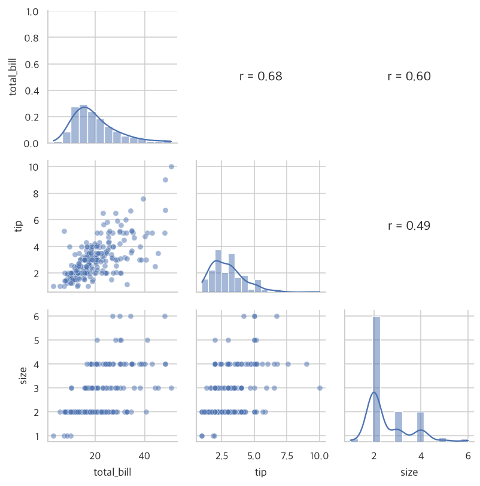
4.2.5 조건을 달리하며 보기: 범주형 변수 활용
상관관계가 ‘모든 집단에서 같은 모양인지’도 중요합니다. 점의 색깔(hue)이나 칸 나누기(col)로 범주형 변수를 추가해 봅니다.
sns.scatterplot(data=tips, x="total_bill", y="tip", hue="time", alpha=0.7) # 점심/저녁에 따라 색깔 다르게
plt.title("식사 시간대별 총금액과 팁")
plt.show()
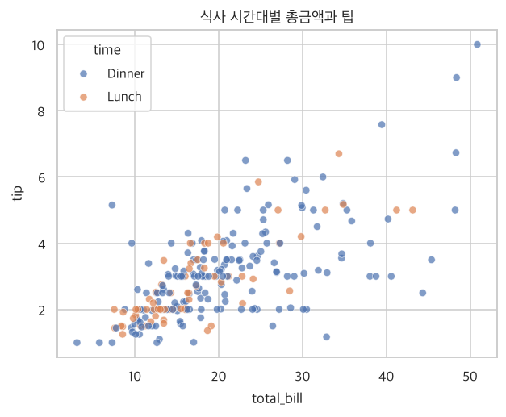
sns.lmplot(data=tips, x="total_bill", y="tip", col="day", col_wrap=2, height=3.2) # 요일별로 칸 나누고 추세선까지
plt.show()
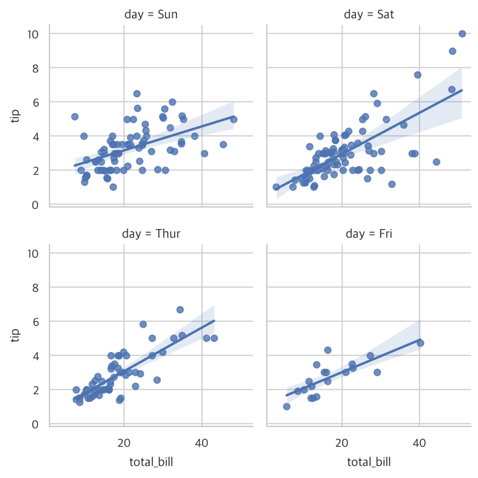
다이아몬드처럼 점이 너무 많아 겹칠 때는 투명도(alpha)를 낮추고 일부만 뽑아(표집) 그리면 좋습니다. 가격과 무게는 둘 다 오른쪽으로 치우쳐 있으므로 로그 눈금이 효과적입니다.
sample = diamonds.sample(3000, random_state=1) # 5만 개 중 3,000개 무작위 추출
sns.scatterplot(data=sample, x="carat", y="price", hue="clarity", alpha=0.5, hue_order=["I1","SI2","SI1","VS2","VS1","VVS2","VVS1","IF"])
plt.xscale("log"); plt.yscale("log")
plt.xticks([0.3, 0.5, 1, 2, 3], ["0.3", "0.5", "1", "2", "3"]) # 눈금 숫자를 읽기 쉽게
plt.minorticks_off()
plt.title("무게와 가격 (로그 눈금, 투명도 적용)")
plt.show()
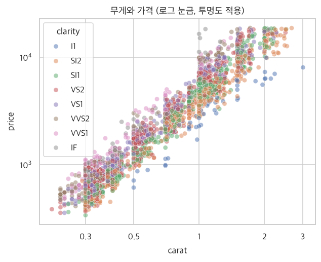
4.2.6 조건으로 쓸 변수가 수치형일 때: 범주로 바꾸기
연속적인 숫자(나이, 금액)를 구간별 범주로 바꾸면 위의 ‘범주형 조건’ 방법을 그대로 쓸 수 있습니다. 데이터를 개수가 같도록 4등분하는 pd.qcut()이 편리합니다.
성적순으로 학생을 4개 모둠(상위 25%, 중상, 중하, 하위 25%)으로 나누는 것과 같습니다. cut은 ‘점수 구간’(0~25점, 25~50점…)으로, qcut은 ‘인원 비율’(상위 25%…)로 나눕니다.
tips["size_group"] = pd.qcut(tips["total_bill"], 4, labels=["하위25%", "중하", "중상", "상위25%"]) # 금액 기준 4등분
tips["size_group"].value_counts().sort_index()
| count | |
|---|---|
| size_group | |
| 하위25% | 61 |
| 중하 | 61 |
| 중상 | 61 |
| 상위25% | 61 |
sns.boxplot(data=tips, x="size_group", y="tip")
plt.title("계산 금액 구간별 팁")
plt.show()
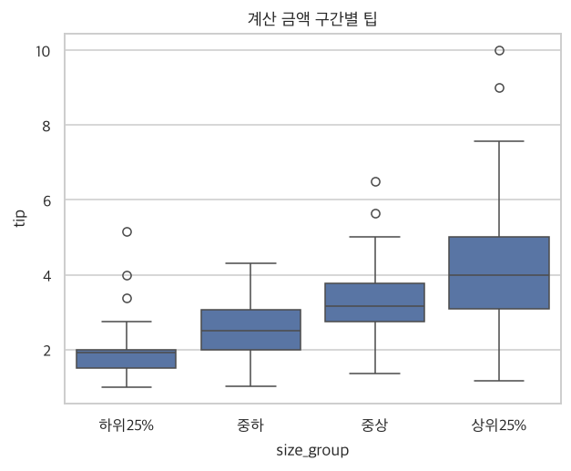
요약: R ↔ 파이썬 대응표
| 하고 싶은 일 | R | 파이썬 |
|---|---|---|
| 평균/중위수 | mean(), median() | s.mean(), s.median() |
| 분산/표준편차 | var(), sd() | s.var(), s.std() |
| 분위수/IQR | quantile(), IQR() | s.quantile(), q3 - q1 |
| 왜도/첨도 | psych::skew() | s.skew(), s.kurt() |
| 종합 요약 | psych::describe() | df.describe() |
| 구간 나누기 | cut() | pd.cut(), pd.qcut() |
| 히스토그램 | geom_histogram() | sns.histplot() |
| 밀도 그래프 | geom_density() | sns.kdeplot() |
| Q-Q 그림 | geom_qq() | sm.qqplot() |
| 상자 그림 | geom_boxplot() | sns.boxplot() |
| 로그/Box-Cox | log10(), powerTransform() | np.log10(), stats.boxcox() |
| 상관계수/검정 | cor(), cor.test() | s.corr(), pearsonr() |
| 상관 시각화 | corrplot() | sns.heatmap() |
| 산점도 + 추세선 | geom_point() + geom_smooth() | sns.regplot() |
| 그림 한꺼번에 | GGally::ggpairs() | sns.pairplot(), PairGrid |